Me contás la falla o el objetivo y revisamos requisitos, fotos, modelo del equipo y condiciones de uso.
SOLUCIONES ELECTRÓNICAS · SANTA FE
Reparo y desarrollo equipos electrónicos para laboratorios e industria
Diagnóstico de instrumental científico, modernización de equipos y hardware a medida. Desde la falla o la idea inicial hasta un equipo operativo.
- Atención técnica directa
- Soluciones reparables y documentadas
- Taller en Santa Fe
Servicios especializados
01. HARDWARE
Hardware y equipos a medida
Desarrollo la electrónica y la integración necesarias para convertir un requerimiento técnico en un prototipo funcional.
- Diseño de circuitos y PCB
- Microcontroladores, firmware y HMI
- Adquisición de datos y control
02. LABORATORIO
Reparación de instrumental
Busco la causa de la falla y evalúo una reparación viable, incluso cuando el equipo es discontinuado o no tiene repuestos directos.
- Instrumental científico y de medición
- Fuentes, placas y sistemas de control
- Modernización de electrónica obsoleta
03. MANUFACTURA
Prototipado e impresión 3D
Diseño y fabrico las piezas necesarias para integrar y proteger la electrónica en condiciones reales de uso.
- Gabinetes y soportes a medida
- Piezas de reemplazo
- Integración electromecánica
Ubicación del taller
El taller está ubicado en la ciudad de Santa Fe, Argentina. Desde allí realizo desarrollos de hardware, armado de placas y reparación de instrumental para empresas, laboratorios e investigadores de la región. Cada consulta es evaluada de manera directa, sin intermediarios.
CONTAME TU CASOCómo trabajo
Defino el alcance, la alternativa de solución y los puntos que deben validarse antes de avanzar.
Realizo la reparación o el desarrollo, verifico su funcionamiento y documento lo necesario para su uso.
Proyectos y trabajos
En cada proyecto podés ver el problema inicial, la solución aplicada y el resultado obtenido.
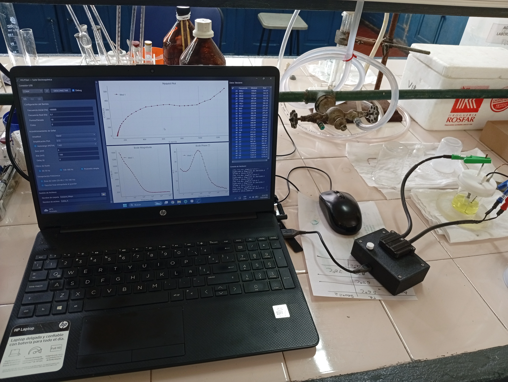
2026Desarrollo de potenciostato portátil
Equipo portátil para espectroscopía de impedancia electroquímica (EIS), voltamperometría cíclica (CV) y cronoamperometría (CA), con firmware y software de control.
VER DETALLES Y GALERÍA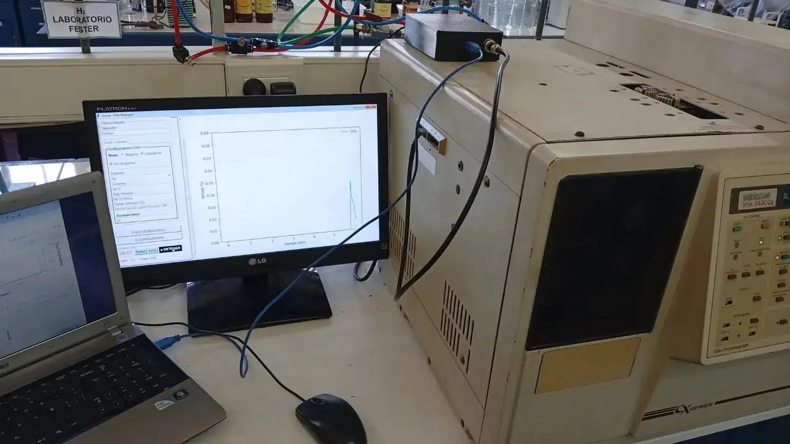
2026Sistema de adquisición de datos para cromatógrafo
Electrónica de adquisición para sensores analógicos y software de análisis y posprocesamiento de datos en cromatógrafos de gases.
VER DETALLES Y GALERÍA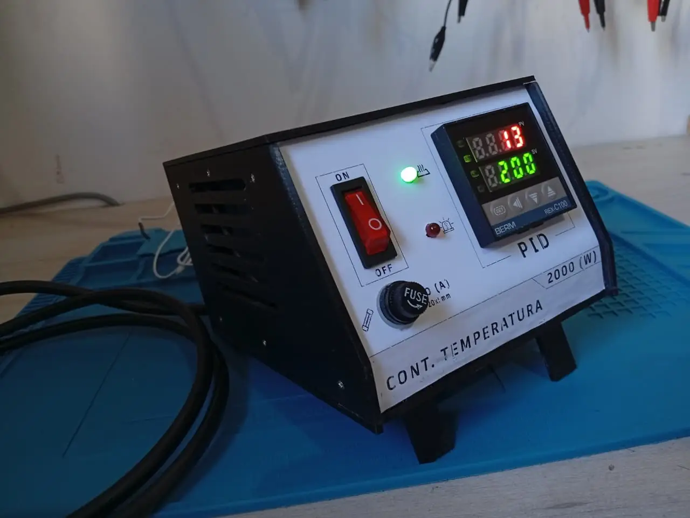
2026Controlador de temperatura PID
Diseño de la estructura y conexión eléctrica de un controlador PID para mantener la temperatura requerida por el proceso.
VER DETALLES Y GALERÍA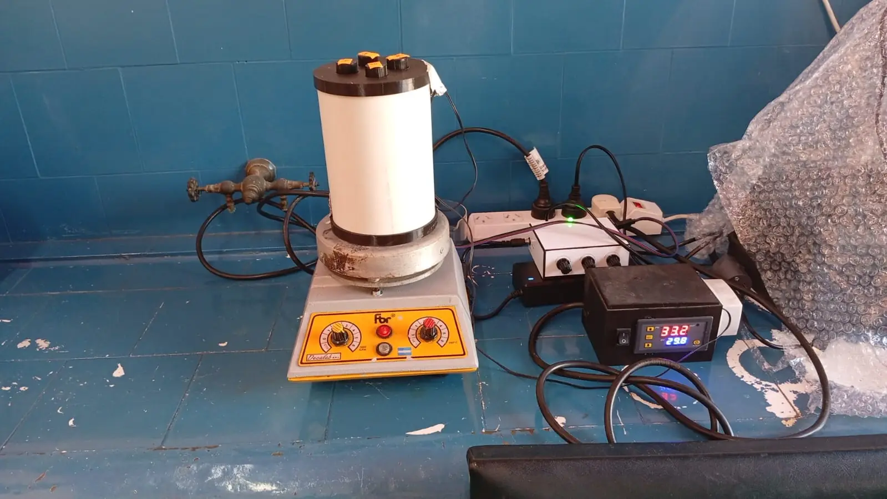
2026Diseño y desarrollo de bioreactor para fotocatálisis
Reactor cilíndrico con iluminación RGB regulable, control térmico y compatibilidad mecánica con agitador magnético.
VER DETALLES Y GALERÍA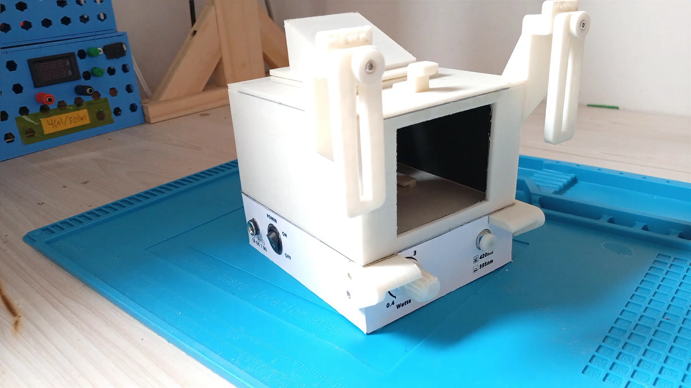
2026Dispositivo para cromatografía TLC
Diseño de un equipo para cromatografía TLC con control PWM de LEDs UV de 385 y 420 nm e integración de otras fuentes de iluminación.
VER DETALLES Y GALERÍA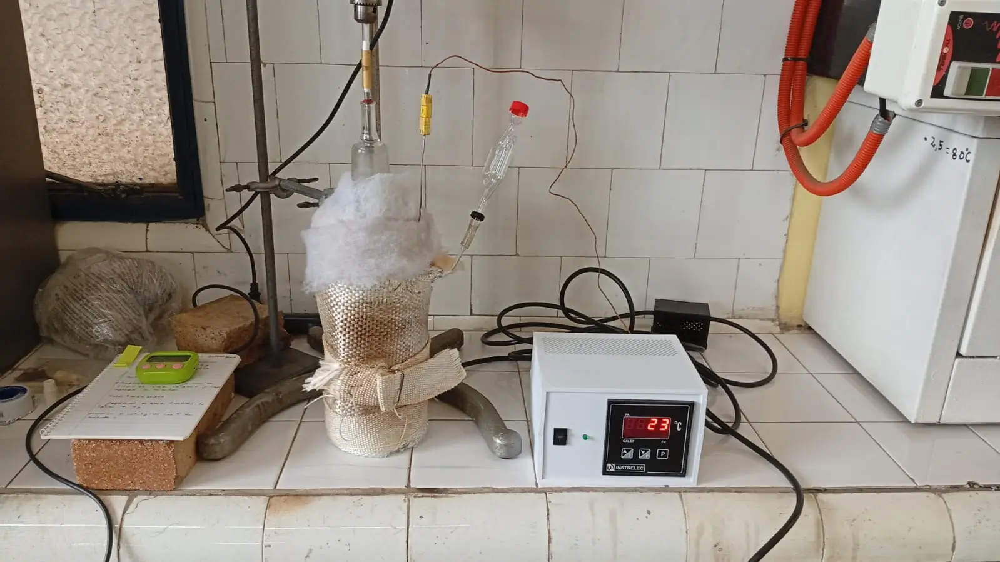
2025Diseño y Prototipado de Manta Calefactora Flexible
Diseño y validación de una manta calefactora flexible de hasta 400 W para aplicar calor controlado sobre superficies cilíndricas o irregulares.
VER DETALLES Y GALERÍA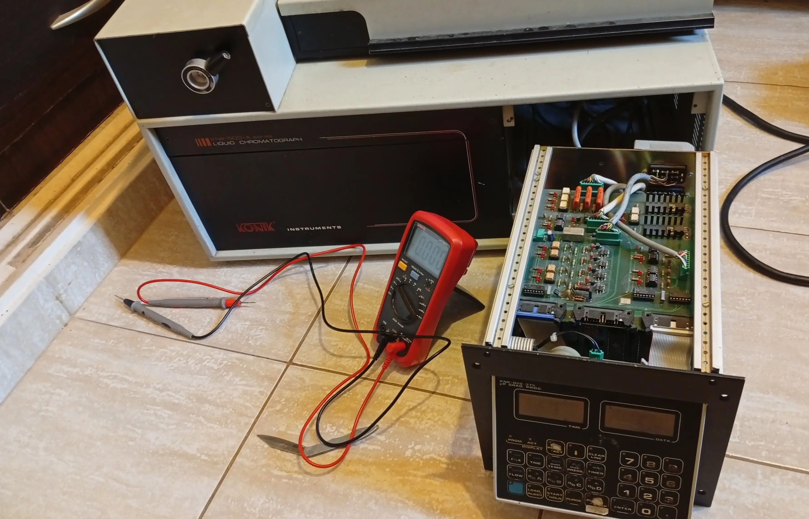
2025Reparación Integral y Rediseño de Interfaz HMI - Cromatógrafo HPLC Konik A5000
Diagnóstico y recuperación de un cromatógrafo líquido Konik, con reparación electrónica y rediseño de la interfaz HMI.
VER DETALLES Y GALERÍA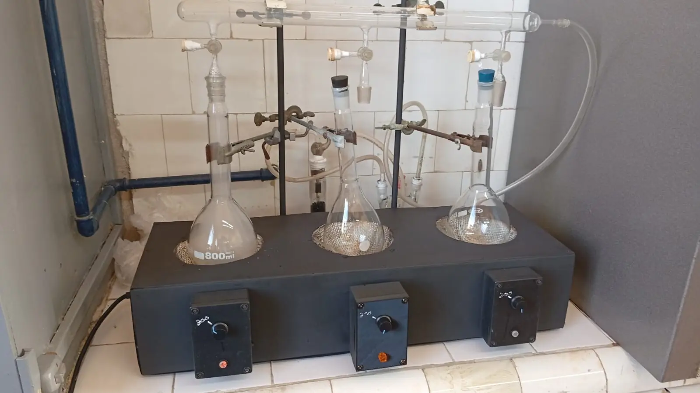
2025Desarrollo de digestor Kjeldahl de múltiples bloques
Diseño y construcción de un digestor Kjeldahl de tres posiciones, con control individual de hasta 400 W por bloque.
VER DETALLES Y GALERÍA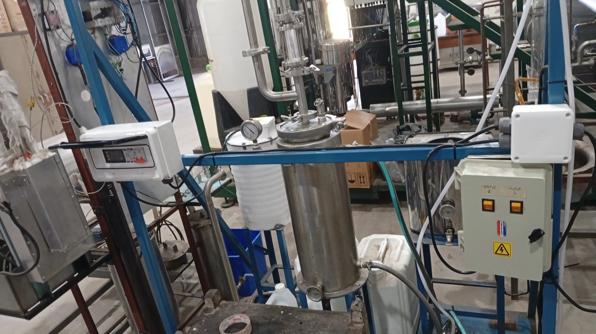
2025Calentador e instalación eléctrica para planta piloto
Diseño de un sistema para calentar agua en una planta piloto, con control de temperatura y tablero eléctrico de alimentación.
VER DETALLES Y GALERÍA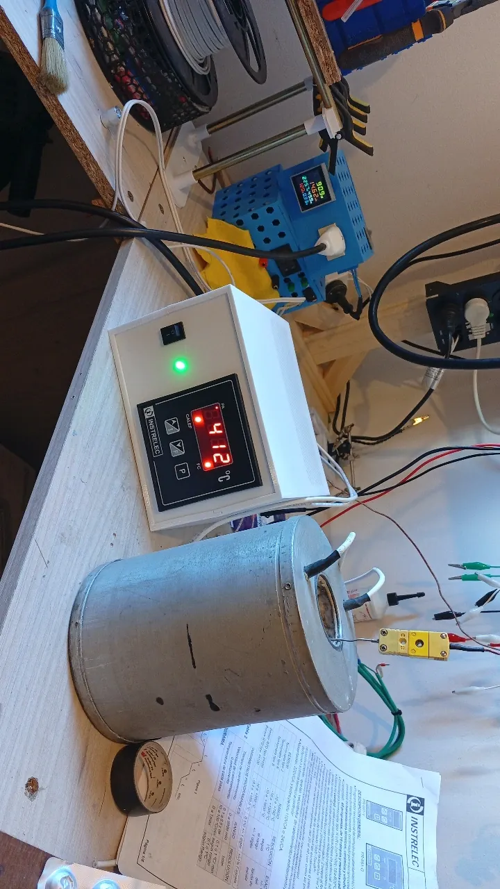
2025Controlador de temperatura PID
Diseño de la estructura y conexión eléctrica de un controlador PID para mantener la temperatura requerida por el proceso.
VER DETALLES Y GALERÍA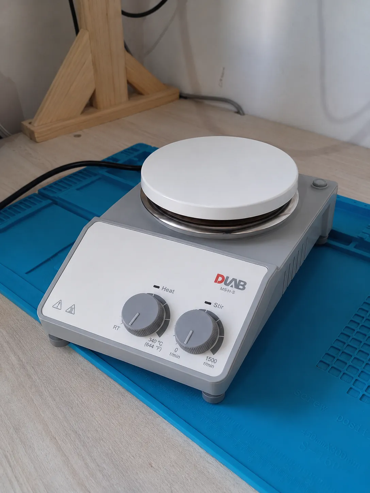
2025Reparación de Agitador Calentador de Laboratorio (DLAB MS-H-S)
Diagnóstico y reparación de agitador calentador magnético, con reemplazo de fuente de alimentación, reconstrucción de pistas del motor dañadas por corrosión química y diseño de protección antisalpicaduras.
VER DETALLES Y GALERÍA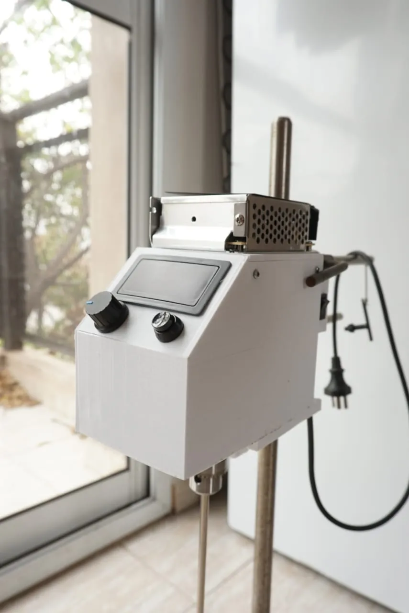
2024Desarrollo de agitador vertical de laboratorio con control PWM
Diseño y ensamble de agitador vertical de 1500 RPM con motor brushless, regulación de velocidad por PWM y timer configurable para control del tiempo de funcionamiento.
VER DETALLES Y GALERÍA
CONSULTA
ENVIAR CONSULTA
¿Tenés un equipo detenido o necesitás desarrollar algo similar?
Podemos evaluar si conviene repararlo, modernizarlo o desarrollar una alternativa.
Preguntas frecuentes
¿Qué equipos reparás?
Instrumental científico, equipos de medición, placas electrónicas, fuentes de alimentación y sistemas de control. Si el equipo es especial o discontinuado, enviame marca, modelo, fotos y una descripción de la falla para evaluar el caso.
¿Podés desarrollar un equipo desde cero?
Sí. Según el proyecto, el trabajo puede incluir circuito electrónico, PCB, firmware, software de control, gabinete e integración del prototipo.
¿Trabajás únicamente en Santa Fe?
El taller está en la ciudad de Santa Fe. Atiendo principalmente a clientes de la zona y también evalúo proyectos de la región cuando el equipo o la documentación pueden enviarse.
¿Qué información conviene enviar?
Para una primera evaluación, indicá el tipo de equipo o desarrollo, marca y modelo si corresponde, falla u objetivo, ciudad y cualquier foto o documentación disponible.